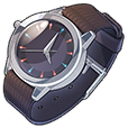

추천 광추
승리의 순간
방어력·효과 명중 +24%
효과 자세히
피격 가능성을 올리고 피격 후 방어력 추가.
랜도의 선택
피격 가능성 증가 · 받는 피해 −24%
효과 자세히
도발과 피격 탱킹 중심.
기억의 소재
효과 저항 +16%
효과 자세히
피격 후 자신의 실드와 피해 감소.
우주 시장 동향
피격 시 100% 기본 확률 연소
효과 자세히
아케론 필살기 자원에 연동. 효과 명중과 적 저항을 확인.
추천 유물
정토 교황의 팔라딘 4 · 부러진 용골 2
- 머리
 주옵션HP부옵션용골 조건 효과 저항 · 속도 · 방어력% · HP% · 효과 명중
주옵션HP부옵션용골 조건 효과 저항 · 속도 · 방어력% · HP% · 효과 명중 - 손
 주옵션공격력부옵션용골 조건 효과 저항 · 속도 · 방어력% · HP% · 효과 명중
주옵션공격력부옵션용골 조건 효과 저항 · 속도 · 방어력% · HP% · 효과 명중 - 몸통
 주옵션방어력%부옵션용골 조건 효과 저항 · 속도 · HP% · 효과 명중
주옵션방어력%부옵션용골 조건 효과 저항 · 속도 · HP% · 효과 명중 - 다리
 주옵션속도 / 방어력%부옵션용골 조건 효과 저항 · 속도 (주옵션 제외) · 방어력% (주옵션 제외) · HP% · 효과 명중
주옵션속도 / 방어력%부옵션용골 조건 효과 저항 · 속도 (주옵션 제외) · 방어력% (주옵션 제외) · HP% · 효과 명중 - 구체
 주옵션방어력%부옵션용골 조건 효과 저항 · 속도 · HP% · 효과 명중
주옵션방어력%부옵션용골 조건 효과 저항 · 속도 · HP% · 효과 명중 - 매듭
 주옵션에너지 회복효율 / 방어력%부옵션용골 조건 효과 저항 · 속도 · 방어력% (주옵션 제외) · HP% · 효과 명중
주옵션에너지 회복효율 / 방어력%부옵션용골 조건 효과 저항 · 속도 · 방어력% (주옵션 제외) · HP% · 효과 명중
이 조합을 추천하는 이유
실드량 증가. 용골은 효과 저항 30%에서 팀 치피 +10%.
정토 교황의 팔라딘 4 · 불로인의 선주 2
- 머리
주옵션HP부옵션용골 조건 효과 저항 · 속도 · 방어력% · HP% · 효과 명중
- 손
주옵션공격력부옵션용골 조건 효과 저항 · 속도 · 방어력% · HP% · 효과 명중
- 몸통
주옵션방어력%부옵션용골 조건 효과 저항 · 속도 · HP% · 효과 명중
- 다리
주옵션속도 / 방어력%부옵션용골 조건 효과 저항 · 속도 (주옵션 제외) · 방어력% (주옵션 제외) · HP% · 효과 명중
- 구체
 주옵션방어력%부옵션용골 조건 효과 저항 · 속도 · HP% · 효과 명중
주옵션방어력%부옵션용골 조건 효과 저항 · 속도 · HP% · 효과 명중 - 매듭
 주옵션에너지 회복효율 / 방어력%부옵션용골 조건 효과 저항 · 속도 · 방어력% (주옵션 제외) · HP% · 효과 명중
주옵션에너지 회복효율 / 방어력%부옵션용골 조건 효과 저항 · 속도 · 방어력% (주옵션 제외) · HP% · 효과 명중
이 조합을 추천하는 이유
속도 120 이상에서 팀 공격력 +8%.
별빛에 숨은 은둔자 4 · 축성가의 벨로보그 2
- 머리
 주옵션HP부옵션방어력 · 속도 · 효과 명중
주옵션HP부옵션방어력 · 속도 · 효과 명중 - 손

주옵션공격력부옵션방어력 · 속도 · 효과 명중 · HP - 몸통 주옵션방어력% / 효과 명중부옵션방어력 · 속도 · 효과 명중 (주옵션 제외) · HP
- 다리
 주옵션속도부옵션방어력 · 효과 명중 · HP
주옵션속도부옵션방어력 · 효과 명중 · HP - 구체
 주옵션방어력%부옵션방어력 · 속도 · 효과 명중 · HP
주옵션방어력%부옵션방어력 · 속도 · 효과 명중 · HP - 매듭
 주옵션방어력%부옵션방어력 · 속도 · 효과 명중 · HP
주옵션방어력%부옵션방어력 · 속도 · 효과 명중 · HP
이 조합을 추천하는 이유
벨로보그는 효과 명중 50% 이상에서 방어력을 추가로 높입니다.
이 정도면 잘 키웠다
선택한 세팅 기준 · —는 확인된 수치 없음
보호막을 보강하며 용골 발동으로 파티 치명타 피해를 지원합니다.
| 스탯 | 추천 스탯 | 준종결 | 종결 |
|---|---|---|---|
| 효과 저항 | 30%[1]부러진 용골 발동 조건. | — | — |
세팅 기준·출처
공개 가이드에서 이 세팅의 준종결 또는 종결 수치를 확인하지 못했습니다.
스탯 조건과 각주
- 효과 저항 · 추천 스탯 부러진 용골 발동 조건. ↑
- 전투 중
빠른 행동으로 스킬 포인트를 확보하며 파티 공격력 버프를 제공합니다.
| 스탯 | 추천 스탯 | 준종결 | 종결 |
|---|---|---|---|
| 속도 | 전투 120[1]선주 공격력 지원 발동 조건. | — | — |
세팅 기준·출처
공개 가이드에서 이 세팅의 준종결 또는 종결 수치를 확인하지 못했습니다.
스탯 조건과 각주
- 속도 · 추천 스탯 선주 공격력 지원 발동 조건. ↑
성혼과 추천 돌파
제작·상점 재화로 얻는 성혼. 실드가 목적이면 2·6단계 효과를 확인.
1일반 공격 화염 추가 피해
방어력 25%, 강화 일반 공격은 50%.
2팀 실드 +방어력 2%+27추천
옛 한철의 굳건함
3전투 스킬·특성 +2
해당 스킬과 대응 강화 스킬의 레벨을 올린다.
4전투 시작 불타는 의지 4스택
문명에 머무는 맹세
5필살기 +2 · 일반 공격 +1
해당 스킬과 대응 강화 스킬의 레벨을 올린다.
6강화 일반 공격·필살기 후 방어력 +10%추천
최대 3스택.
추천 파티


기본 운영과 행적
기본 운영
돌진·단일 표적 보스 공격 전에 도발. 일반 공격으로 SP·실드 갱신, 위험할 때 필살기로 실드 재적용.
행적 육성 순서
필살기 → 특성 → 일반 공격 → 전투 스킬. 생존 우선 시 특성과 승급 2단계의 팀 받는 피해 감소 먼저.
아하 속도 계산기 →